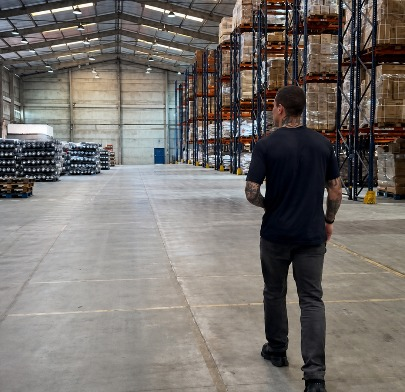
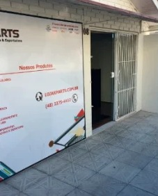
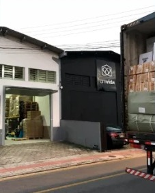
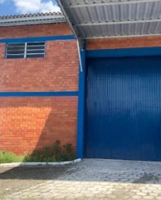
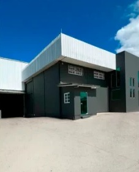
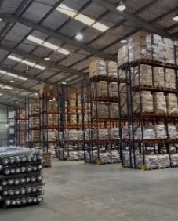

Produto sem demanda
Importar barato não adianta, quando não existe mercado para vender.
Agora acompanho, individualmente, empresários que desejam estruturar ou expandir uma operação própria de importação, ajudando a tomar decisões mais seguras antes que erros caros aconteçam.
Vagas limitadas para garantir acompanhamento estratégico individual.
É nas decisões iniciais que o lucro, os riscos e o futuro da operação são definidos.
Importar barato não adianta, quando não existe mercado para vender.
O menor preço pode esconder problemas de qualidade, prazo e negociação.
Um único erro pode comprometer toda a margem da operação.
Produtos sem conformidade podem gerar atrasos, multas ou impedir a comercialização.
Custos inesperados, atrasos e capital parado antes mesmo da venda.
O problema nunca foi importar.
É exatamente nessas decisões que o acompanhamento estratégico faz diferença.
Cada empresa enfrenta desafios diferentes.
Não existe uma fórmula pronta. Cada encontro é direcionado para a realidade da empresa, ajudando o empresário a tomar decisões mais seguras antes de investir e durante toda a operação.
Entendemos o momento da empresa e identificamos riscos, oportunidades e prioridades.
Definimos as decisões mais importantes antes do investimento.
Organizamos cada etapa para reduzir riscos e aumentar previsibilidade.
Cada decisão relevante é discutida individualmente durante a operação.
Após os primeiros resultados, planejamos os próximos passos do crescimento.

Minha experiência não foi construída em uma sala de aula.
Durante mais de uma década participei de todas as etapas da importação.
Foi assim que construí uma operação que ultrapassou R$ 1 bilhão em faturamento.
Ao longo dos anos, cada expansão aconteceu para resolver um novo desafio da operação, o resultado foi a construção de uma estrutura capaz de controlar todas as etapas da importação.

As primeiras importações direto da origem.

Fim da dependência de intermediários.

Estrutura pronta para crescer em escala.

Controle total da operação, ponta a ponta.

15.600 m² para o próximo ciclo.
Da negociação com fabricantes ao desenvolvimento de produtos. Da estruturação logística ao crescimento de marcas próprias.


Mais de uma década de experiência, hoje compartilhada com quem quer construir sem repetir os mesmos erros.
A importação começa muito antes do primeiro container.
Ela começa nas decisões que você toma hoje.
As decisões mais importantes da sua operação
Você terá acompanhamento estratégico durante toda a jornada da importação.
Durante todo o período, cada encontro será dedicado às decisões mais importantes da sua operação.
Agenda exclusiva para discutir prioridades, validar decisões e definir os próximos passos.
Para decisões que não podem esperar até a próxima reunião.
Avaliação dos resultados da operação, definição dos próximos passos e planejamento da evolução do negócio.
Cada ciclo atende poucas empresas para garantir dedicação individual e acompanhamento próximo em cada operação.
A maioria dos empresários não perde dinheiro ao importar. Perde por tomar decisões sem experiência, processo ou orientação.
A mentoria ajuda a construir uma operação sólida desde o início, reduzindo riscos e prejuízos.
Marque o que tem a ver com o seu momento:
As perguntas mais comuns de empresários que estão avaliando participar da mentoria.
Não. O acompanhamento é individual: as reuniões são exclusivas da sua empresa e direcionadas à realidade da sua operação.
Não necessariamente. A mentoria atende empresários que querem estruturar a primeira operação de importação ou expandir uma operação que já existe.
O foco é a tomada de decisão: você aprende a avaliar, validar e negociar com fornecedores com o apoio de quem já fez isso em escala.
Pelo WhatsApp, para as decisões que não podem esperar até a próxima reunião.
Sim. Classificação fiscal e planejamento tributário fazem parte das decisões estratégicas discutidas, porque impactam diretamente a margem da operação.
Não. O resultado depende das decisões e da execução de cada empresa. O acompanhamento existe para que essas decisões sejam tomadas com mais segurança e menos risco.
A mentoria é destinada a empresários que desejam estruturar ou expandir uma operação própria de importação, com acompanhamento próximo e vagas limitadas.